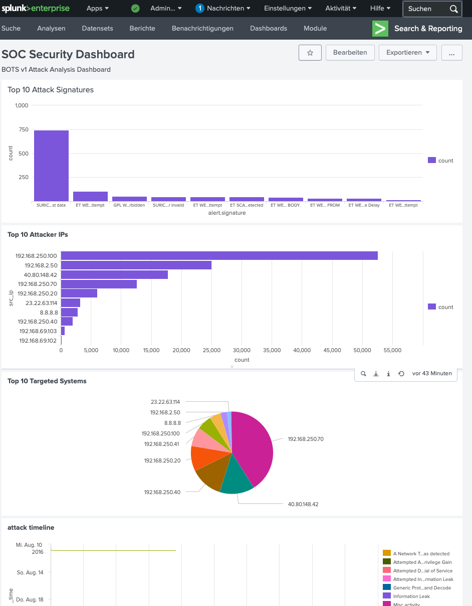
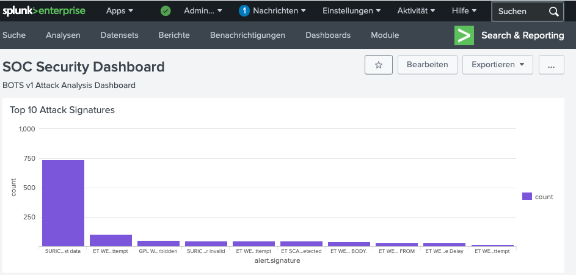
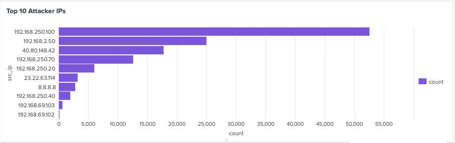

Lab Architecture
The goal was to build a realistic SOC environment from scratch using Infrastructure as Code — no manual clicking, everything reproducible and version-controlled on GitHub.

Splunk Enterprise runs inside Docker, managed entirely by Terraform. This means the entire lab can be
destroyed and recreated with a single terraform apply command.
The Dataset — BOTS v1
The Boss of the SOC (BOTS) v1 dataset by Splunk contains real attack data from a simulated enterprise environment. It covers a multi-stage attack campaign targeting a fictional company in August 2016.
955,807 events across 22 source types including Suricata IDS, Windows Event Logs, Fortigate firewall, IIS web server logs, network streams (DNS, HTTP, SMB, TCP), and Nessus vulnerability scans.
The Investigation
Step 1 — Reconnaissance
First, I mapped the attack surface by identifying what log sources were available and which systems were targeted.
This revealed the dataset structure — Suricata IDS had 125,584 alerts, SMB traffic had 151,568 events, and Windows Security logs contained 87,430 entries.

Step 2 — Identifying the Target
Nessus vulnerability scan logs revealed which internal systems were being actively probed by the attacker.
Primary target: 192.168.250.20 was scanned 37 times — clearly the main attack target.
Step 3 — IDS Alert Analysis
Querying Suricata IDS alerts against the target IP revealed the attack types in use.
| ALERT SIGNATURE | COUNT | SEVERITY | MEANING |
|---|---|---|---|
| ETPRO TROJAN Ransomware/Cerber Onion Domain Lookup | 2 | CRITICAL | C2 communication via Tor |
| ET SCAN Behavioral Unusual Port 445 traffic | 2 | HIGH | SMB port scan — WannaCry vector |
| ET SCAN Behavioral Unusual Port 135 traffic | 1 | MEDIUM | RPC port scan — Windows exploit prep |
| SURICATA DNS malformed response data | 1 | MEDIUM | DNS manipulation attempt |

Critical Finding: The signature "ETPRO TROJAN Ransomware/Cerber Onion Domain Lookup" confirms that the machine at 192.168.250.20 was infected with Cerber ransomware and actively communicating with a Tor-based Command & Control server.
Step 4 — Attacker Attribution
Expanding the search to all source IPs revealed both the external attacker and lateral movement within the network.
Generated 2,907 alerts — the highest of any source. This is an internal machine performing lateral movement, indicating the infection had already spread within the network.
Generated 2,250 alerts. This is the original threat actor's IP address — the entry point of the attack from outside the network.
2,038 DNS queries to Google's public DNS — consistent with ransomware's domain generation algorithm (DGA) behavior for C2 communication.
Reconstructed Attack Timeline
External attacker (192.168.2.50) performs Nessus vulnerability scanning against internal hosts. Target 192.168.250.20 identified as primary victim.
Attacker exploits vulnerability on 192.168.250.20. SMB port scanning (port 445) and RPC probing (port 135) suggest a Windows exploit vector.
Cerber ransomware installed on 192.168.250.20. IDS detects Tor (.onion) domain lookup — ransomware contacting its C2 server for encryption keys.
Infection spreads to 192.168.250.100. This internal machine begins generating the highest volume of malicious traffic — 2,907 IDS alerts.
Suricata IDS generates 125,584 alerts total. SOC analyst correlates Nessus scans, IDS alerts, and Windows Event Logs to reconstruct the full attack chain.
Security Dashboard
Using Splunk's built-in visualization tools, I built a 4-panel SOC Security Dashboard combining all findings into a single real-time view:
Bar chart of most frequent Suricata IDS signatures. Immediately highlights DNS manipulation and XSS attempts as dominant attack vectors.
Reveals 192.168.250.100 as the most active source — an unexpected internal IP, immediately flagging lateral movement.
Pie chart showing 192.168.250.70 as the most targeted system, helping prioritize containment efforts.
Line chart of attack activity over time (August 2016), showing the attack campaign duration and intensity peaks.
Key Takeaways
Terraform + Docker means the entire SOC environment can be rebuilt from scratch in minutes. No manual setup, no configuration drift.
The compromised internal machine (192.168.250.100) generated more alerts than the external attacker — internal traffic is often under-monitored.
No single log source told the full story. The attack chain only became clear by correlating Nessus scans, Suricata alerts, and Windows Event Logs together.
2,038 DNS queries to 8.8.8.8 and malformed DNS responses are classic ransomware C2 communication patterns — always monitor DNS traffic.
Source code available on GitHub: Both the Terraform infrastructure and Splunk configuration are fully documented and version-controlled. → terraform-splunk-demo